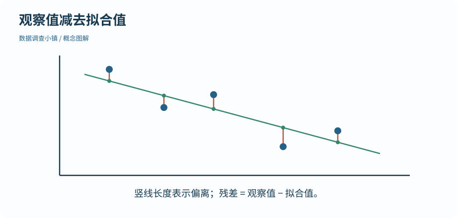
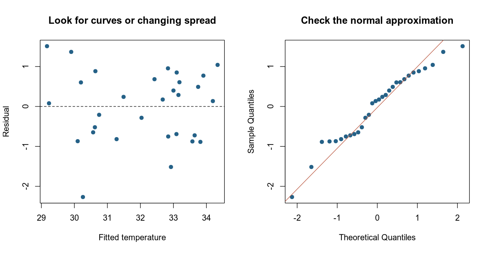

第 32 节 · 证据研究所
直线没讲完的部分
模型画得出来，就说明模型合适吗？
阅读残差图与 Q–Q 图，识别外推和模型条件的限制。
本节目录
运行位置：打开练习包内的 r-lab.Rproj，在项目根目录运行本节脚本。安装与准备见第 02—04 节；第 13 节说明扩展包。
把没解释掉的部分拿出来看
残差是观察值减去模型拟合值。一个地点比直线预测更热，残差为正；比预测更凉，残差为负。残差不是程序错误，而是用来检查模型是否漏掉规律的信息。
图解 · 观察值减去拟合值

每条竖线连接观察点与同一横坐标的拟合值；在线上方残差为正，下方为负。
放大查看 ↗ 保存 SVG ↓# 数据调查小镇 · 第 32 节
# 在 r-lab 项目根目录运行；输出只写入 results。
parks <- read.csv("data/independent_sites.csv")
model <- lm(temperature_c ~ canopy_pct, data = parks)
print(round(range(parks$canopy_pct), 1))
print(round(c(residual_mean = mean(residuals(model)), residual_sd = sd(residuals(model))), 4))
dir.create("results", showWarnings = FALSE)
png("results/32-diagnostics.png", width = 1200, height = 620, res = 120)
par(mfrow = c(1, 2))
plot(fitted(model), residuals(model), pch = 19, col = "#256187", xlab = "Fitted temperature", ylab = "Residual", main = "Look for curves or changing spread")
abline(h = 0, lty = 2)
qqnorm(residuals(model), pch = 19, col = "#256187", main = "Check the normal approximation")
qqline(residuals(model), col = "#b9553d")
invisible(dev.off())[1] 14.8 83.2
residual_mean residual_sd
0.0000 0.8875R 实际生成 · 检查线性模型的残差

左图查找曲线与变化的离散程度；右图比较残差与正态分布的分位数。图形不能单独证明独立性。
放大查看 ↗ · 下载图片 ↓第一张图：还有形状吗
把拟合值放在横轴，残差放在纵轴。若残差围绕零线随机散开，线性均值与大致恒定变异的假设可能较合理；若出现明显弯曲，线性关系可能不足；若散布逐渐扩大，恒定方差假设可能不合适。
图形是一种诊断线索，不是自动通关的证书。小样本看不出明显模式，也不代表所有条件已被证明。带截距的最小二乘回归中，残差均值接近零是拟合的数学性质，不能把它当成模型正确的独立证据。
第二张图：推断近似是否可疑
Q–Q 图比较残差的分位数与理论正态分位数。明显偏离直线，尤其尾部很强的偏离，提示需要进一步检查。正态条件主要关系到这类小样本区间和检验的精确性；它不是说原始 x、原始 y 必须各自严格正态。
数据独立性不能靠一张 Q–Q 图证实。若记录有时间、地点或个体聚类，需要从设计及相关结构考虑，而不是只看点是否靠近线。
外推是跨出已经看过的范围
脚本先打印覆盖率的实际范围。在 50% 附近作解释与在远离所有观察的覆盖率处预测，依据强度不同。更不要把此地此时的模拟关系搬到其他气候或季节而不加检查。
看到异常点时，先核对来源和影响，再决定是否修正或采用其他方法，并保留处理记录。只为了让图更直、p 值更小而删点，会改变问题并损害解释。
动手试试
残差均值为什么不够
如果残差均值几乎为零，可以据此证明直线模型正确吗？
给我一点提示
带截距的最小二乘拟合本来就有这个性质。
查看参考解法与解释
不能。这是拟合的数学性质之一；还需要看曲线、散布、异常点、设计独立性及适用范围。
带走这一点
下一节继续沿地图向前。也可以先修改本节例子中的一个值，解释输出为什么变化。
检查一下理解
Q–Q 图主要帮助检查什么？
查看解释
分布诊断不能替代数据采集设计或文件核验。